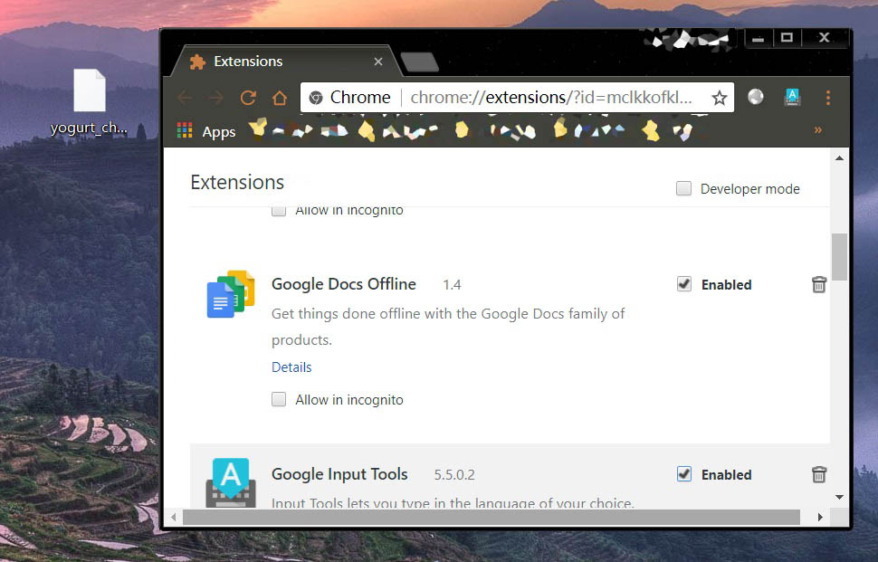
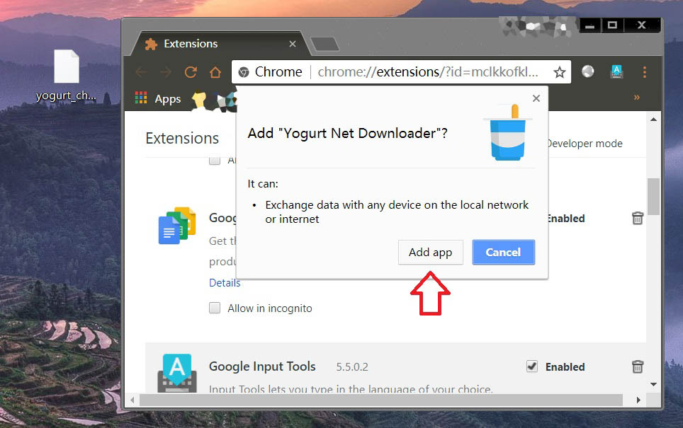

Yogurt 安装
安装
第一步 获取一个安装包 [ ]
]
Chrome 应用市场
Chrome 应用市场自2016年11月开始已经不接受新添加应用。
本站的链接
请右键点击 这个链接 ，选择 【链接另存为】
网盘链接
百度云 链接 http://pan.baidu.com/s/1dF3Uc8L 密码：q9f1
Google Drive 链接 Yogurt_chrome_app.crx
GitHub 上的源代码
第二步 添加到Chrome扩展程序 []
将 yogurt_chrome_app.crx 文件保存到桌面，并将下面的链接复制到Chrome浏览器中打开
chrome://extensions/

将 yogurt_chrome_app.crx 文件拖入进 Chrome

点击 添加应用，完成安装。

在弹出的页面中点击 Yogurt Net Downloader 打开。
以后可以在 Chrome 左上角点击 应用 图标找到我。

右键点击扩展应用的图标可以发送桌面快捷方式。

上一步
下一步
可能遇到的问题 FAQ page
Email yogurtNetDL@gmail.com